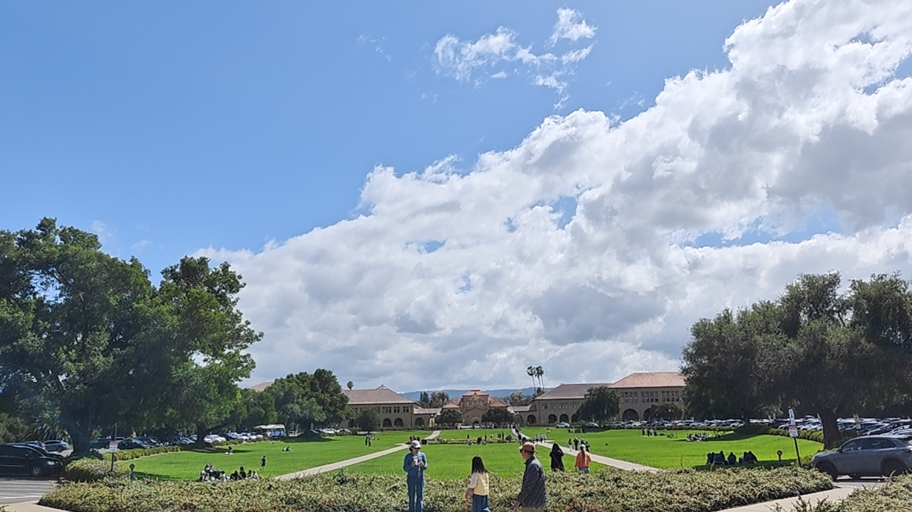

← 返回行程列表
Day 9
Day9 斯坦福
2026年4月26日
·
周日
影像
石径回廊
斯坦福古朴砂岩建筑，深邃拱廊连接校园，氛围宁静且充满学术气息
红瓦映翠微
斯坦福标志性的红瓦黄墙建筑在绿树映衬下，显得宁静而典雅，透着浓厚的学术气息
棕榈映红瓦
棕榈树掩映着红瓦黄墙的校园古建，草坪静谧无行人，氛围悠闲典雅
蓝衣姐妹行
两位女士身穿亮眼蓝色卫衣，在绿意盎然的校园建筑前漫步合影
斯坦福掠影
斯坦福大学标志性的胡佛塔与砂岩建筑，蓝天白云映衬下红瓦黄墙格外庄重
斯坦福午后
阳光明媚的斯坦福大学纪念礼堂前，喷泉水花四溅，骑行者与游客在标志性的黄墙红瓦建筑前构成了一幅和谐的校园美景
云下漫步
斯坦福圆形花园与开阔草坪，蓝天白云绿树交相辉映，宁静惬意的午后校园美景
时光回廊
斯坦福大学标志性黄砂岩拱廊，深邃透视感与光影交织，宁静庄重的学术氛围
登顶同乐
三位游客身着统一深蓝连帽衫在塔顶观景台灿烂合影点赞，背景红瓦绿树与蓝天白云
凝望地狱门
斯坦福校园罗丹《地狱之门》青铜巨作，门楣思想者俯瞰众生，蓝天白云下庄严震撼

云下斯坦福
斯坦福椭圆广场与广阔草坪，砂岩红瓦建筑映衬蓝天白云，悠闲午后校园氛围
×
❮
❯